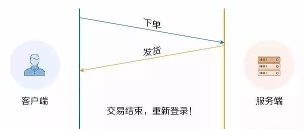
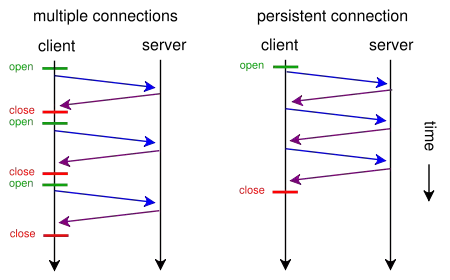
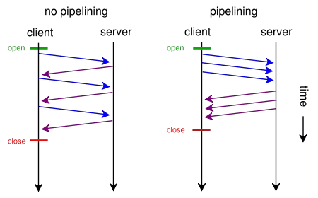
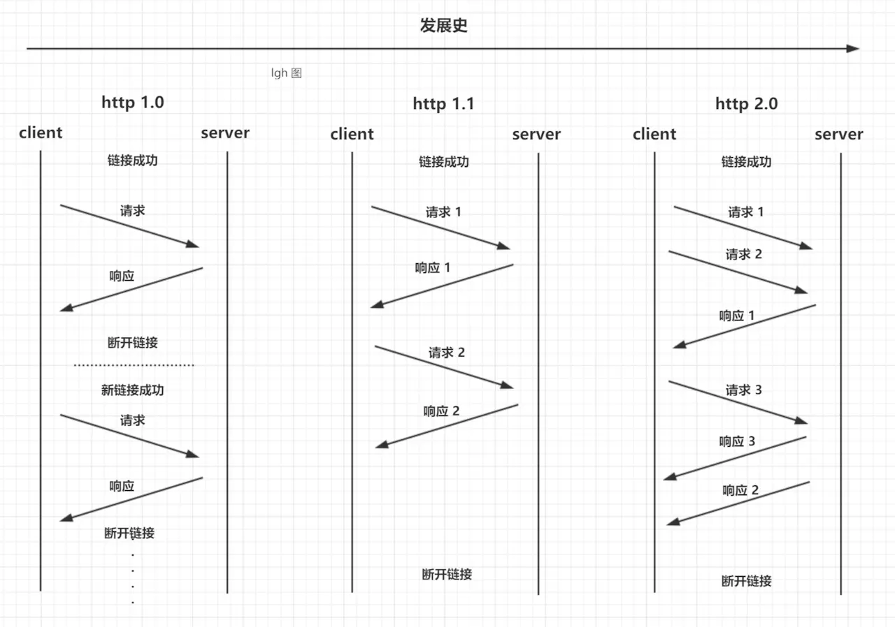

重为轻根，静为躁君。——老子
Http 系列(-) Http 发展历史
Http 系列(二) Http2 中的多路复用
Http 系列(三) Http/Tcp 三次握手和四次挥手
Http 系列(四) Http 中 Get/Post 的区别
简介
多路复用代替原来的序列和阻塞机制，所有就是请求的都是通过一个 TCP 连接并发完成。同时也很好的解决了浏览器限制同一个域名下的请求数量的问题。
在 HTTP/2 中，有了二进制分帧之后，HTTP/2 不再依赖 TCP 链接去实现多流并行了，在 HTTP/2 中：
- 同域名下所有通信都在单个连接上完成，同个域名只需要占用一个 TCP 连接，使用一个连接并行发送多个请求和响应。
- 单个连接可以承载任意数量的双向数据流，单个连接上可以并行交错的请求和响应，之间互不干扰。
- 数据流以消息的形式发送，而消息又由一个或多个帧组成，多个帧之间可以乱序发送，因为根据帧首部的流标识可以重新组装。每个请求都可以带一个 31bit 的优先值，0 表示最高优先级， 数值越大优先级越低。
帧（frame）和流（stream）
在 HTTP/2 中，有两个非常重要的概念：帧（frame）和流（stream）。
帧（frame）
HTTP/2 中数据传输的最小单位，因此帧不仅要细分表达 HTTP/1.x 中的各个部份，也优化了 HTTP/1.x 表达得不好的地方，同时还增加了 HTTP/1.x 表达不了的方式。
每一帧都包含几个字段，有length、type、flags、stream identifier、frame playload等，其中type 代表帧的类型，在 HTTP/2 的标准中定义了 10 种不同的类型，包括上面所说的 HEADERS frame 和 DATA frame。此外还有：PRIORITY（设置流的优先级）RST_STREAM（终止流）SETTINGS（设置此连接的参数）PUSH_PROMISE（服务器推送）PING（测量 RTT）GOAWAY（终止连接）WINDOW_UPDATE（流量控制）CONTINUATION（继续传输头部数据）
在 HTTP 2.0 中，它把数据报的两大部分分成了 header frame 和 data frame。也就是头部帧和数据体帧。
流（stream）
流： 存在于连接中的一个虚拟通道。流可以承载双向消息，每个流都有一个唯一的整数 ID。
HTTP/2 长连接中的数据包是不按请求-响应顺序发送的，一个完整的请求或响应(称一个数据流 stream，每个数据流都有一个独一无二的编号)可能会分成非连续多次发送。它具有如下几个特点：
- 双向性：同一个流内，可同时发送和接受数据。
- 有序性：流中被传输的数据就是二进制帧 。帧在流上的被发送与被接收都是按照顺序进行的。
- 并行性：流中的 二进制帧 都是被并行传输的，无需按顺序等待。
- 流的创建：流可以被客户端或服务器单方面建立, 使用或共享。
- 流的关闭：流也可以被任意一方关闭。
- HEADERS 帧在 DATA 帧前面。
- 流的 ID 都是奇数，说明是由客户端发起的，这是标准规定的，那么服务端发起的就是偶数了。
发展历程
从 Http/0.9 到 Http/2 要发送多个请求，从多个 Tcp 连接=>keep-alive=>管道化=>多路复用不断的减少多次创建 Tcp 等等带来的性能损耗。
多个 Tcp 连接
在最早的时候没有keep-alive只能创建多个Tcp连接来做多次请求。多次 http 请求效果如下图所示：

一次请求完成就会关闭本次的 Tcp 连接，下个请求又要从新建立 Tcp 连接传输完成数据再关闭，造成很大的性能损耗。
Keep-Alive
Keep-Alive解决的核心问题是： 一定时间内，同一域名多次请求数据，只建立一次 HTTP 请求，其他请求可复用每一次建立的连接通道，以达到提高请求效率的问题。这里面所说的一定时间是可以配置的，不管你用的是Apache还是nginx。
以往，浏览器判断响应数据是否接收完毕，是看连接是否关闭。在使用持久连接后，就不能这样了，这就要求服务器对持久连接的响应头部一定要返回content-length标识body的长度，供浏览器判断界限。有时，content-length的方法并不是太准确，也可以使用 Transfer-Encoding: chunked 头部发送一串一串的数据，最后由长度为 0 的chunked标识结束。
多次 http 请求效果如下图所示：

上图：设置 Connection:Keep-Alive，保持连接在一段时间内不断开。
Keep-Alive还是存在如下问题：
- 串行的文件传输。
- 同域并行请求限制带来的阻塞（6~8）个
管线化
HTTP 管线化可以克服同域并行请求限制带来的阻塞，它是建立在持久连接之上，是把所有请求一并发给服务器，但是服务器需要按照顺序一个一个响应，而不是等到一个响应回来才能发下一个请求，这样就节省了很多请求到服务器的时间。不过，HTTP 管线化仍旧有阻塞的问题，若上一响应迟迟不回，后面的响应都会被阻塞到。

上图：HTTPpipelining：建立多个连接
多路复用
多路复用代替原来的序列和阻塞机制。所有就是请求的都是通过一个 TCP 连接并发完成。因为在多路复用之前所有的传输是基于基础文本的，在多路复用中是基于二进制数据帧的传输、消息、流，所以可以做到乱序的传输。多路复用对同一域名下所有请求都是基于流，所以不存在同域并行的阻塞。多次请求如下图：

上图：多路复用
总结
在 HTTP/2 中，有两个非常重要的概念，分别是帧（frame）和流（stream）。
帧代表着最小的数据单位，每个帧会标识出该帧属于哪个流，流也就是多个帧组成的数据流。
HTTP2 采用二进制数据帧传输，取代了 HTTP1.x 的文本格式，二进制格式解析更高效。
多路复用代替了 HTTP1.x 的序列和阻塞机制，所有的相同域名请求都通过同一个 TCP 连接并发完成。同一 Tcp 中可以发送多个请求，对端可以通过帧中的标识知道属于哪个请求。通过这个技术，可以避免 HTTP 旧版本中的队头阻塞问题，极大的提高传输性能。